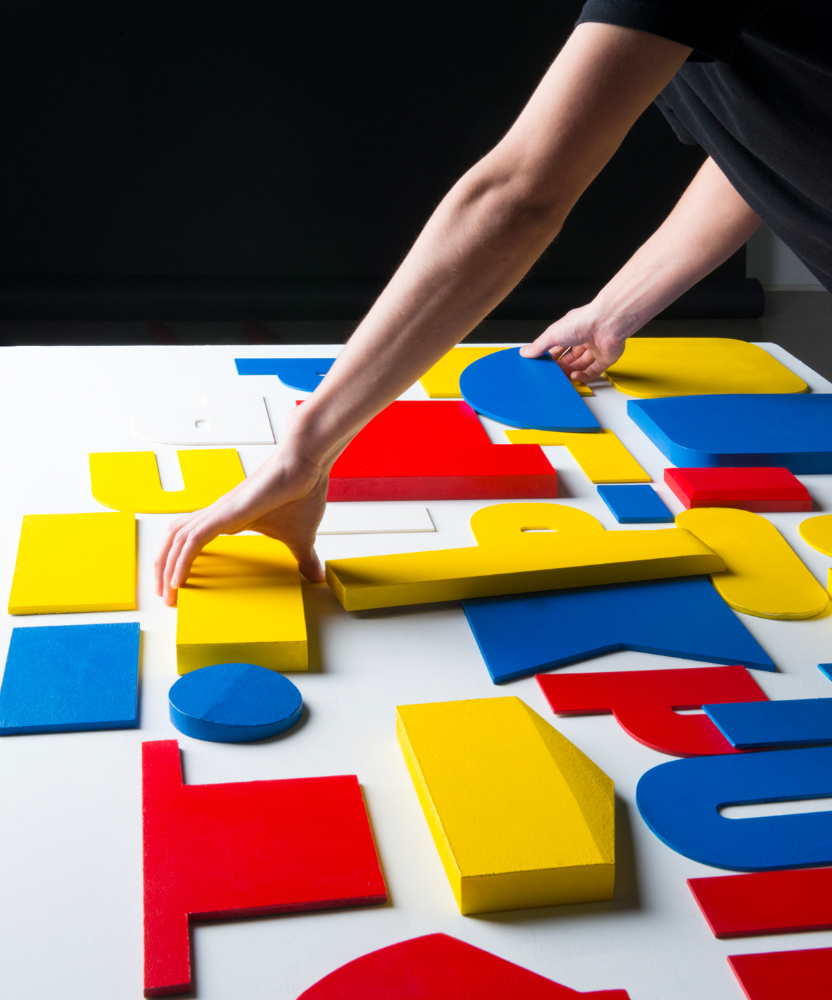
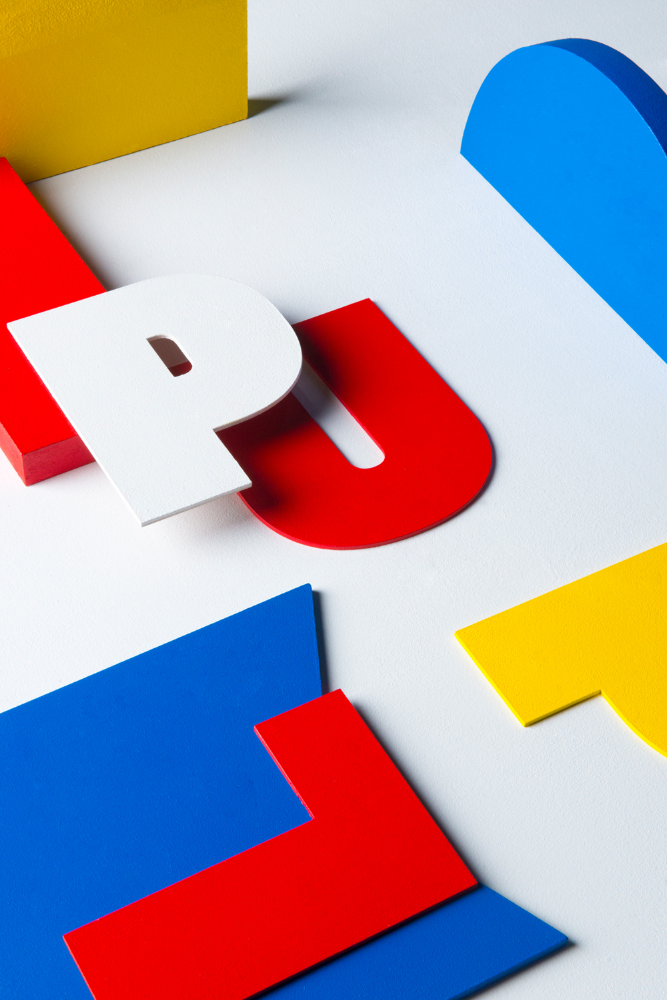

En collaboration avec → Studio Garella, → Thomas Larbain & → Raphaël Dencausse
Proposition d'identité visuelle pour la 11e Biennale Internationale Design de Saint-Étienne. Sur le thème du « populaire » nous avons proposé un atelier « clandestin » de production d'image accessible au public. À travers un univers formel tiré d'emblème de la publicité et de logos, nous avons donné notre vision d'une image « populaire ». Une image accessible dans son procédé de fabrication, mais également dans sa composition graphique et ses couleurs.